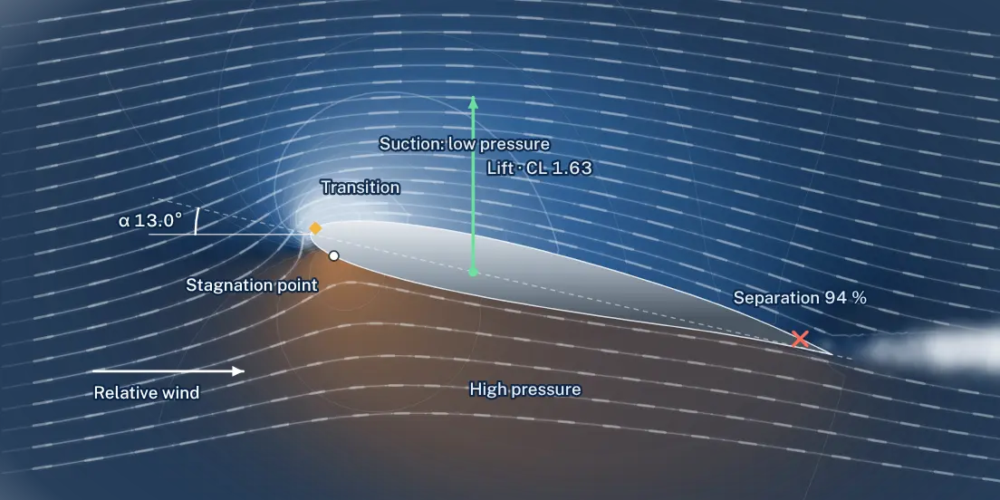

01
Understand
Interactive labs across the EASA ATPL subjects. Change a value and watch the aircraft respond.
Welcome to NORDAP
From aviation theory and regulations to interactive training and flight preparation.
From theory to the cockpit
One platform for the whole path: see why the aircraft behaves as it does, drill what you do in the cockpit, and prepare the flight in front of you.

Interactive labs across the EASA ATPL subjects. Change a value and watch the aircraft respond.
 Photo: Olivier Cleynen, CC BY-SA 3.0
Photo: Olivier Cleynen, CC BY-SA 3.0Weather, NOTAM, minima, performance and fuel in a fixed order, and the route seen over the terrain.
Flight Intelligence
Ask about theory, rules or your own aircraft. Flight Intelligence answers from the EASA Easy Access Rules and from the AFM, QRH and SOP you add, and shows the paragraph or page behind each statement.
Example · illustrative documents
The RVR drops below our minimum as we pass 1,400 ft on the ILS. Can we continue?
Yes, down to 1,000 ft above aerodrome elevation. If the reported RVR is still below your minimum there, you may not continue the approach.CAT.OP.MPA.305
Had it dropped after you passed 1,000 ft, you could continue to DA/H, and go around there without the required visual reference.GM1 CAT.OP.MPA.305
Your SOP adds a check at 1,000 ft: the PM reads out the latest RVR before the PF continues.SOP 6.4 · p. 6-12
Preview. Flight Intelligence runs on a lighter AI model while NORDAP is in testing. Use answers as a study reference, and always check the official source.
NORDAP is still being developed. Rules come from EASA only; the theory draws on sources such as the FAA handbooks and SKYbrary, explained in EASA terms and units. Questions, feedback or an error in the content? Write to us, and we will answer by e-mail.